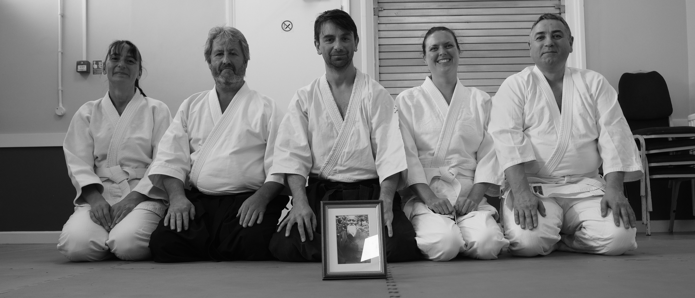

A Martial Art for All

We practise traditional Aikido in Perranwell, near Truro, Cornwall. The club is a member of the Aikido Research Federation and the instructor is qualified with the British Aikido Board.
Aikido is a Japanese martial art that teaches how to harmonise yourself with an attacker’s movement and intention. This art promotes awareness, agility, balance, confidence, and a peaceful mind. It improves physical and mental health. Aikido practitioners relax, both in the dojo and in everyday life.
“Aikido has nothing to do with brute strength, weapons, or war. It is the Art of Peace.”
Morihei Ueshiba, Founder of Aikido
Posts
subscribe via RSS